Biei and Furano: Blue Ponds, Flower Fields and Farmland
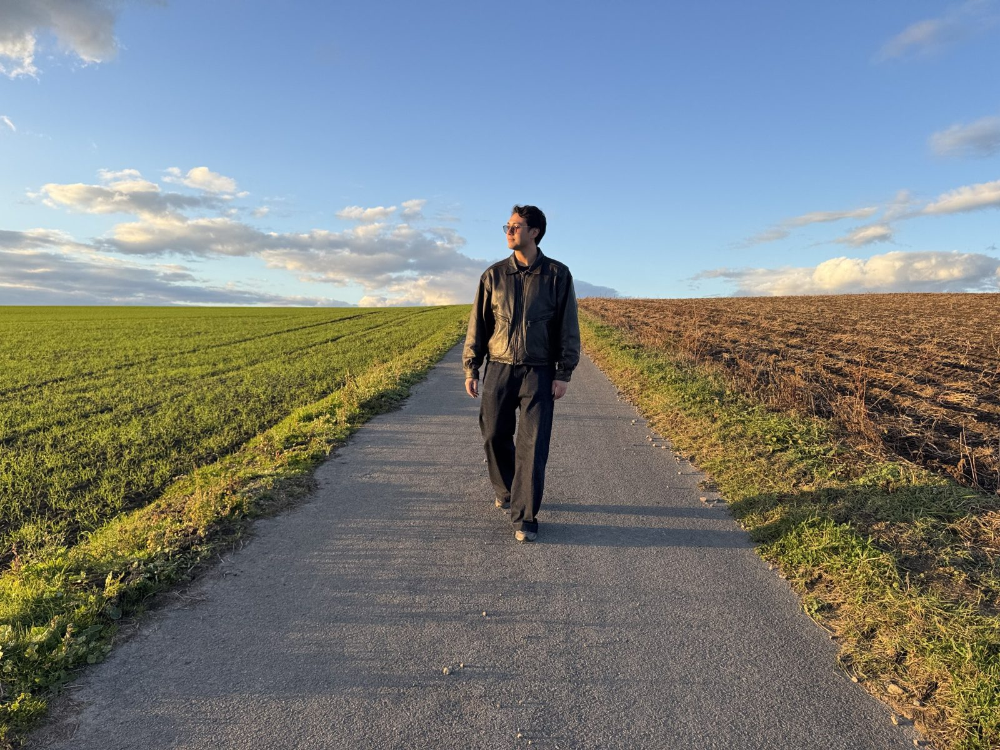
John walking through the fields near Biei
Tucked away in the heart of Hokkaido, Japan's northernmost island, Biei and Furano are home to some of the most picturesque scenery in Japan. We spent four unforgettable nights there, and every drive felt like a new postcard. The roads wound through endless patchwork farmland and up into Biei's famous rolling hills, covered in trees, while breathtaking snow-capped mountains watched over it all. We visited in early autumn, when hints of autumnal colour were just starting to appear, but come back in mid-autumn and those hills glow with red, orange and gold.
Hitting the road
We flew into Sapporo and picked up a hire car, which is easily the best way to get around this part of Hokkaido. Public transport out in the countryside is limited, and most of the best sights are well off the train line. Having our own car meant we could explore at our own pace, without being tied to a tour group's schedule. We could take detours on a whim, linger wherever we liked, and stop for photos as often as we wanted (which was a lot!).
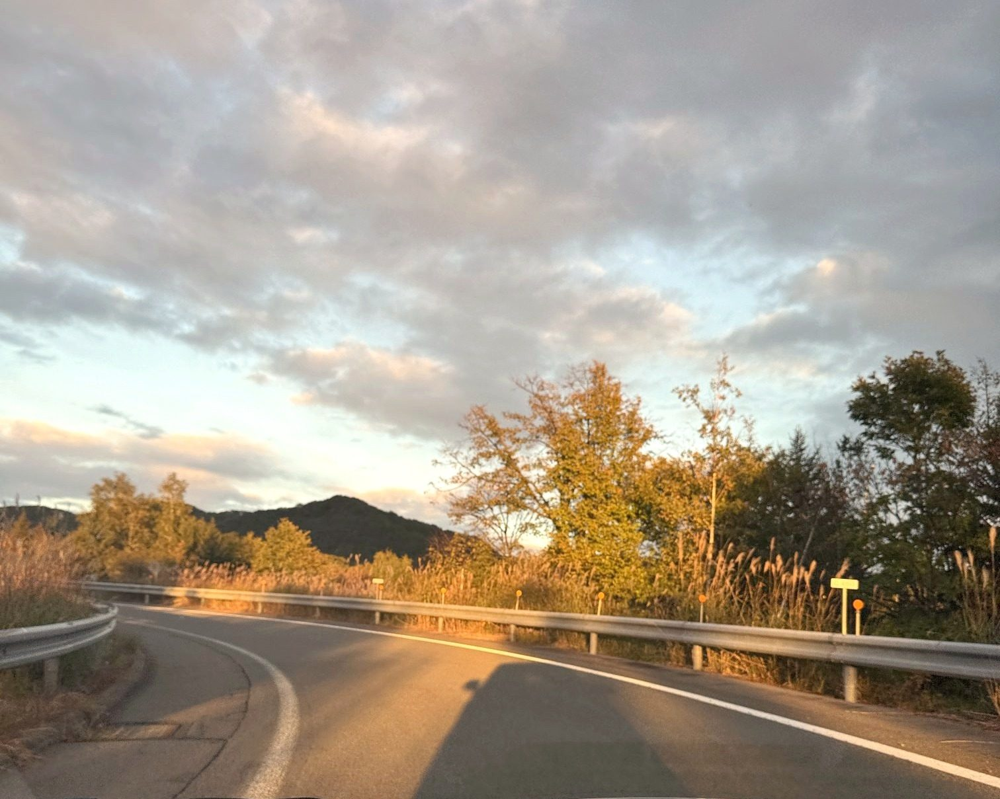
Golden light on the drive to Biei
We took in the beautiful countryside as we drove out to our first hotel, snacking on a bag of vegetable curry okaki from Isshindo Honpo along the way. These crunchy rice crackers have a gentle curry kick and are dangerously moreish! It was dark by the time we arrived, and we knew nowhere would be open for dinner, so we stopped at a konbini (convenience store) to stock up on food first. Then we checked in and settled in for the night.
John did all the driving and loved every minute of it. With hardly any traffic and stunning scenery around every bend, it made for a wonderfully relaxing road trip through the countryside. Japan drives on the left too, just like back home in Australia, so it felt easy from the start. If you're planning to hire a car, make sure you organise an International Driving Permit before you leave home, as you can't get one once you're in Japan. In Australia, you can apply online through your state's motoring club (the RACV in Victoria).
Our stay near Biei
We stayed four nights at Adagio Hokkaido, a small cluster of private timber villas tucked into the forest just outside Biei, and it was so much more spacious than we expected.
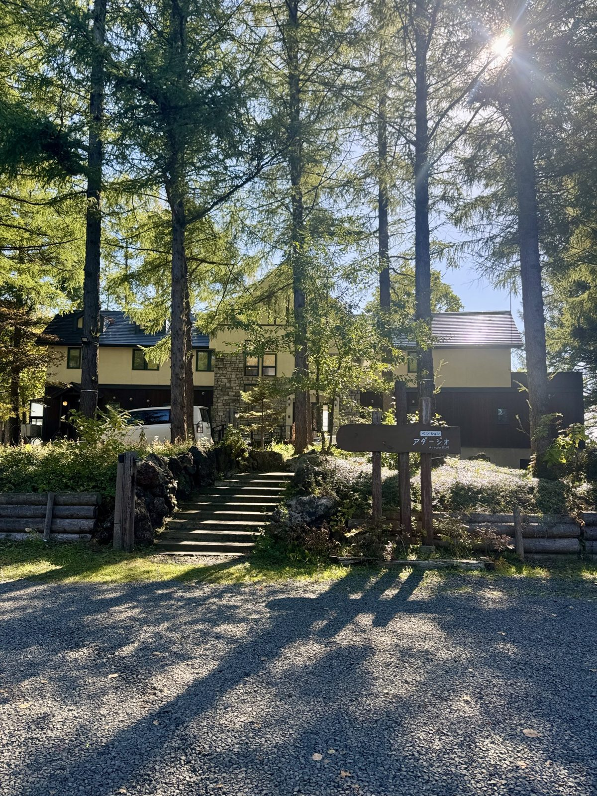
The main building where we checked in, among the tall trees
Inside, it was all warm timber and soft natural light, with tall floor-to-ceiling windows stretching over two levels and framing the forest outside. Curled up by the window with a morning matcha, watching the trees, it felt like a cosy cabin hideaway. The villa had everything we needed for a longer stay, including a full kitchen, a comfortable lounge and dining area, and even our own washing machine.
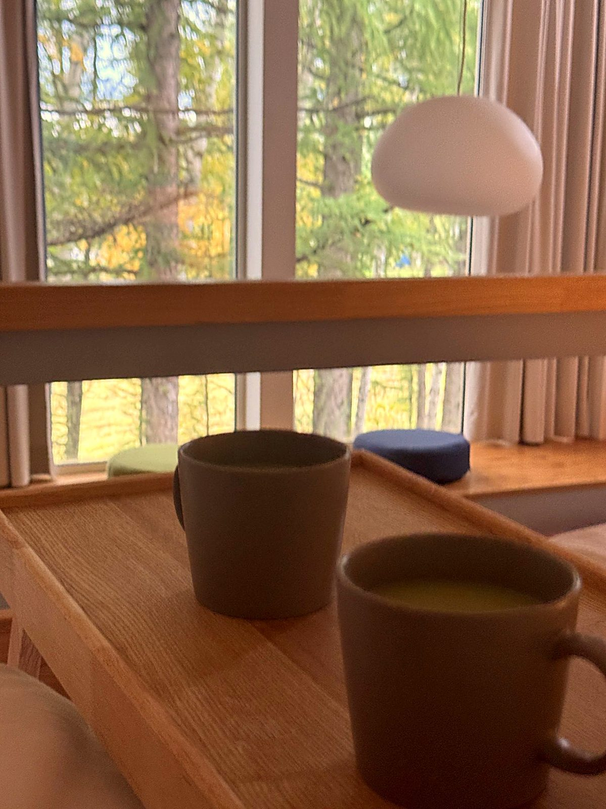
Morning matcha by the big window
Outside, it was just trees, fresh air and blissful quiet, with a little timber deck looking across golden fields to the mountains. When we had early starts, the staff kindly packed us a takeaway breakfast of sandwiches, yoghurt and drinks, including a surprisingly good can of black coffee, perfect for eating on the road.
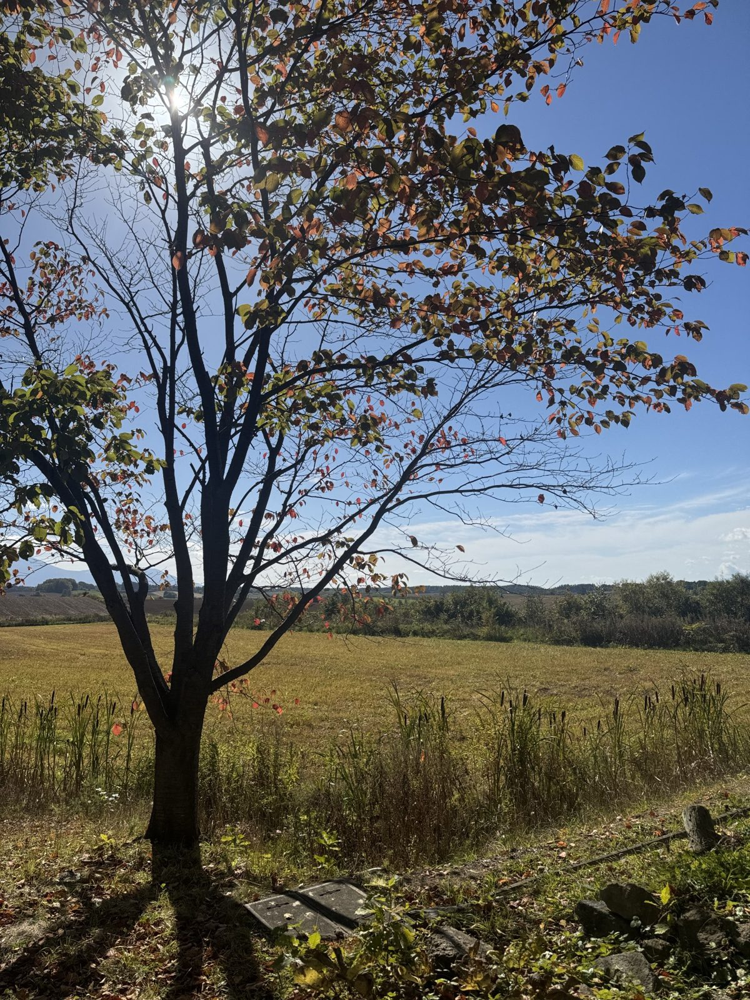
Autumn trees and golden fields around our stay
This was one of our two favourite stays of the whole trip, along with our hotel in Sapporo. I'd happily stay here again, and next time I'd love to come in winter and see these fields blanketed in snow.
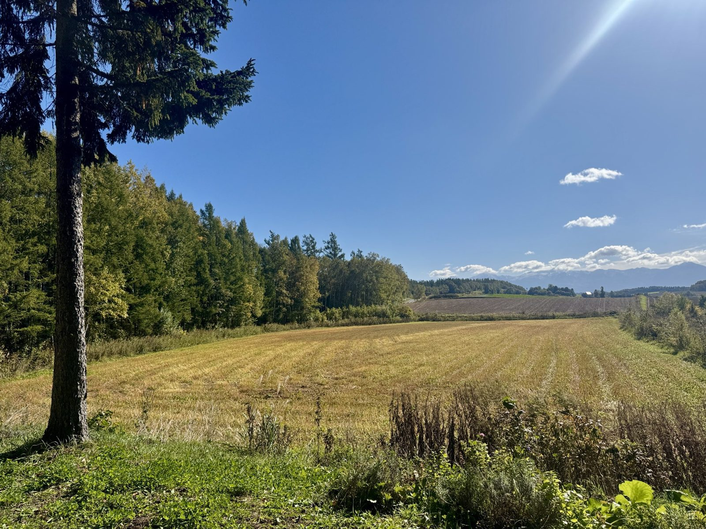
The open fields next to our stay
Japan loves its seasonal flavours, with new limited-edition treats appearing throughout the year. In autumn, pumpkin and chestnut flavours were everywhere, even in the convenience stores, and I particularly fell for anything pumpkin. I tried a seasonal pumpkin pudding on a whim, not expecting much, and it was absolutely delicious! That kicked off a bit of a pudding-tasting spree, and we tried every pumpkin pudding we could find, plus a few other flavours. Pumpkin was our favourite by far.
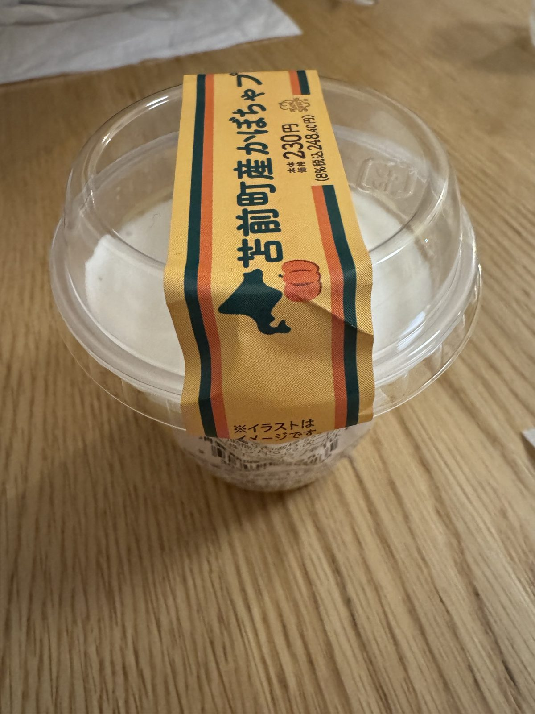
Seicomart's Tomamae pumpkin pudding
The one that started it all was from Seicomart, Hokkaido's much-loved local convenience store chain, made with pumpkin from Tomamae on the island's west coast (about ¥250). We also loved 7-Eleven's rich pumpkin pudding topped with cream (about ¥290), Meito's Hokkaido pumpkin pudding, and the Ebisu pumpkin pudding from Fruitscake Factory in Sapporo. I can't wait to have them again next time we're in Japan in autumn.
Where we stayed: Adagio Hokkaido, a small group of private villas in the countryside just outside Biei.
Mt Asahidake
Mt Asahidake was one of the biggest highlights of all our travels in Japan. Rising 2,291 metres above sea level, it's the highest peak in Hokkaido, towering over the vast, untouched wilderness of Daisetsuzan, Japan's largest national park. The drive there was beautiful in itself, with scenic roads winding up the mountain through the forest, where the first hints of autumn were just starting to appear. From the base, the Asahidake Ropeway carried us up to Sugatami Station, at around 1,600 metres, in about ten minutes, gliding over the treetops with the steaming, snow-dusted peak growing closer the higher we climbed.
The moment we stepped out at the top, an icy wind hit us. Before heading up, the main gift shop at the base had already come to my rescue with proper hiking shoes, gloves and a cosy Hokkaido jumper, but coming from a hot Tokyo, even with the extra layers my jacket was no match for the mountain air! Before we set off, the staff gave everyone a quick briefing on the Hokkaido brown bears (higuma) that call Daisetsuzan home, covering recent sightings, areas to avoid and what to do if we came across one.
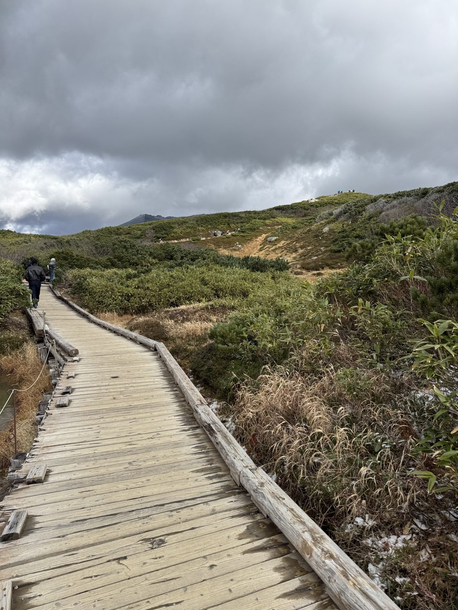
A boardwalk through the green alpine shrubs on Asahidake
The walking loop wound past Sugatami Pond, alpine plants and steaming volcanic vents, through the most spectacularly diverse landscape I've ever seen. Snow and fog swirled around the peak and steam drifted from the vents, while blue sky, bright green shrubs, autumn colour and little ponds in different shades of blue filled the view below, as if several seasons had collided at once. The scenery seemed to change with every few steps, but it was so cold that we didn't walk as far as we'd have liked. Next time we'll pack warmer and spend longer exploring the tracks.
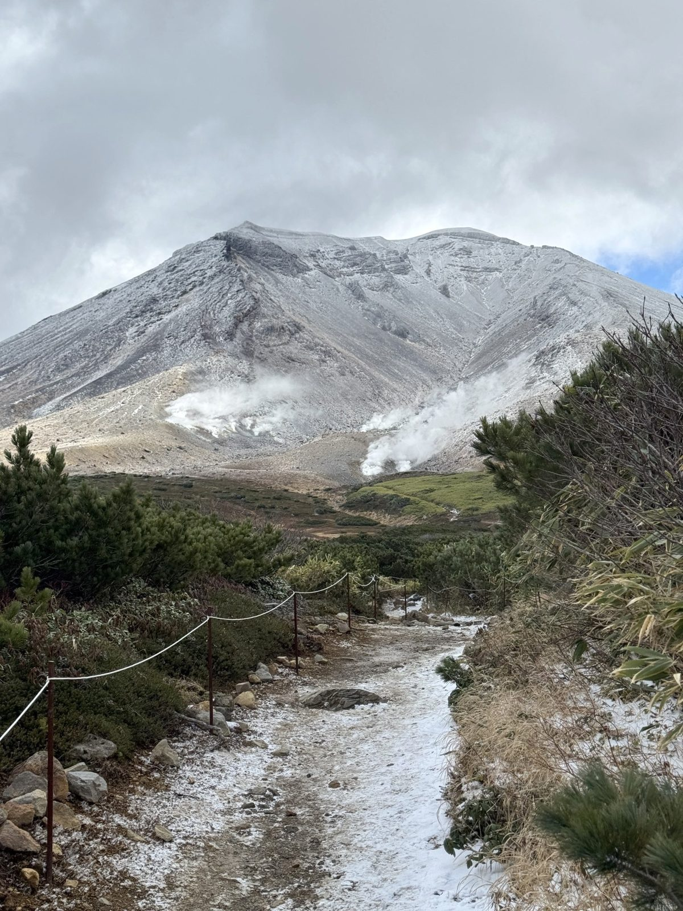
A snowy track towards the steaming peak
At the top station, a small cafe kiosk serves up hot drinks, a welcome way to warm your hands after a chilly walk, and there's a little gift shop too. My new layers came in very handy for the rest of the trip, including later around chilly Mt Fuji.
Rug up: Hokkaido is much colder than the rest of Japan, so pack for winter even in autumn, with a warm jacket, an extra layer, gloves, a beanie and comfortable walking shoes.
Scenic countryside
Road-tripping around Biei was a highlight in itself, and we kept stopping at lookouts and pulling over for photos along the way. John was a very patient model!
One of my favourite surprises was a bright red torii gate standing all on its own in the middle of the fields. It looked so vibrant against the green farmland, with a path leading through to a small Hachiman shrine.
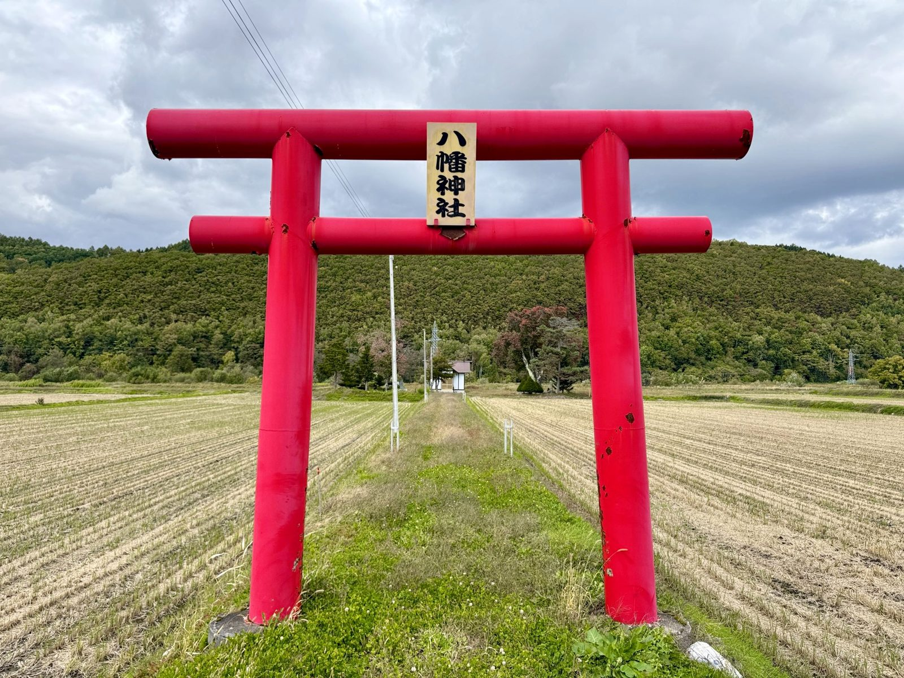
A red torii gate in the middle of the fields
On a chilly day, a warm bowl of ramen was exactly what we felt like, so we stopped for lunch in Biei town at Ramen Hakkai Biei no Oka, where the staff were so friendly and welcoming. The ramen was delicious, but we didn't realise how large the serves would be when we ordered a side of pan-fried gyoza too, so John had to help me finish mine!
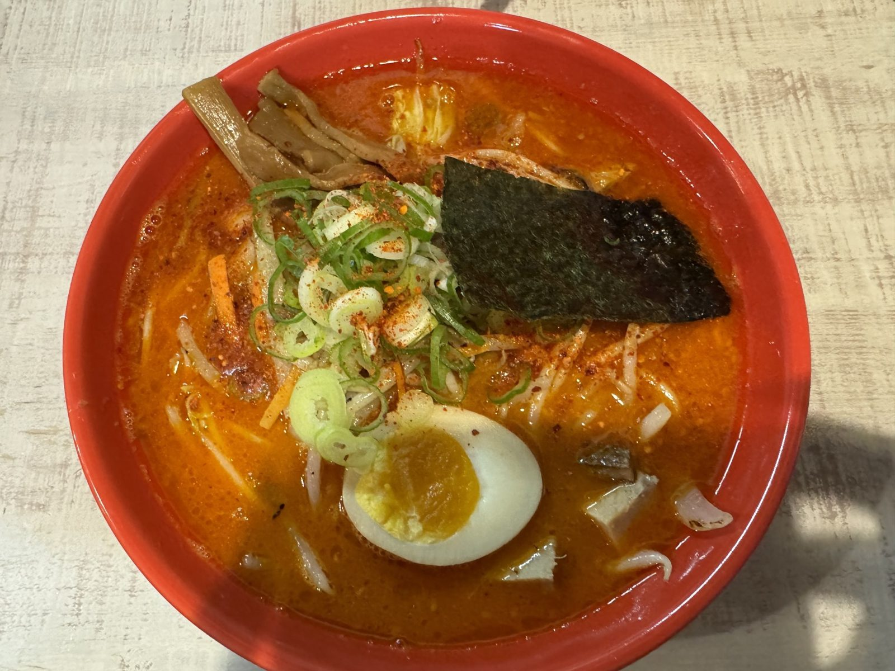
Spicy ramen with a soft egg at Ramen Hakkai (the photo doesn't do the size of the bowl justice!)
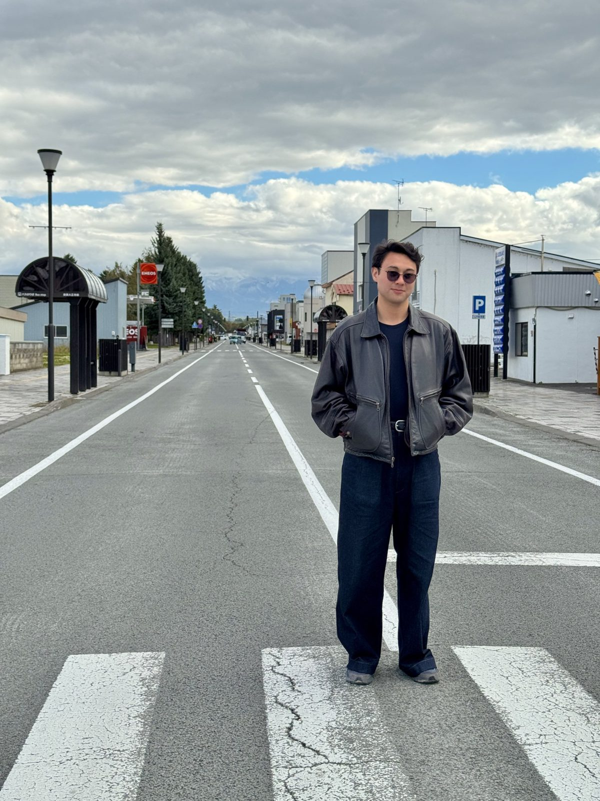
John on the quiet main road in Biei after lunch
Shirogane Blue Pond
Not far from Biei is one of Hokkaido's most famous sights, the Shirogane Blue Pond (Aoi-ike). Its vivid turquoise water is every bit as vibrant in real life as it is in pictures, and incredibly, the pond was created by accident. A dam built after a volcanic eruption caused water to pool here, and natural minerals from nearby hot springs give it that dreamy blue colour. Bare larch trees still stand in the water, and with the clouds reflected on the surface, it looked like something out of a painting.
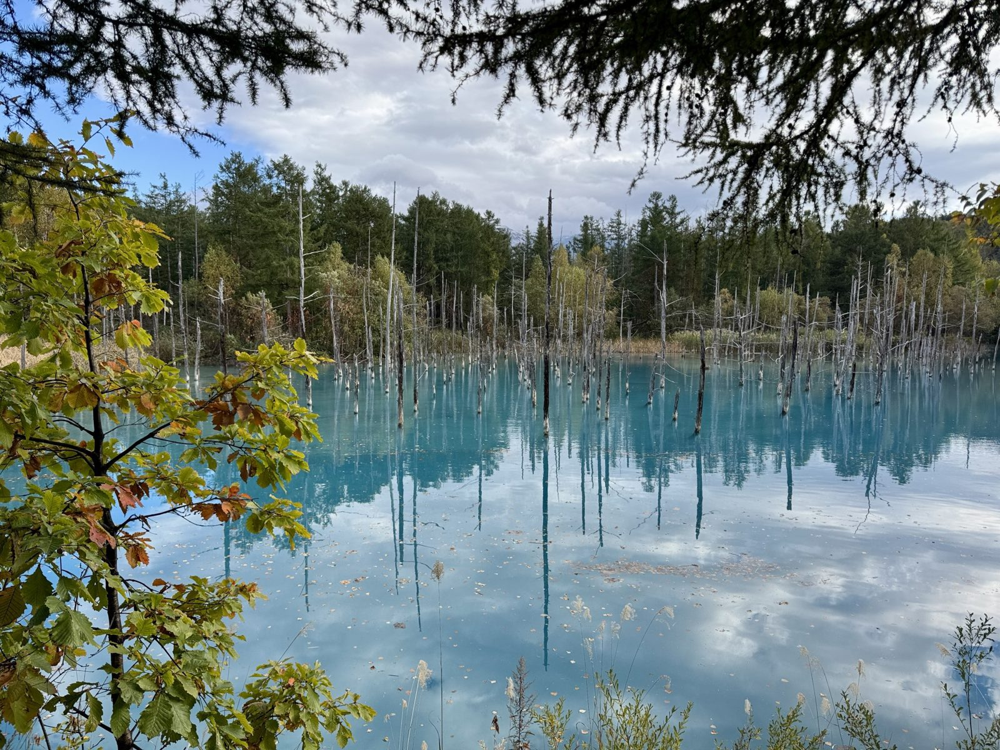
Yes, it really is this blue
An easy walking path loops around the pond, with beautiful photo spots almost everywhere you look, from glimpses of turquoise water through the trees to fluffy pampas grass framed by the snowy Tokachidake mountains. The colour shifts with the weather and seasons, and it's a popular stop for tour buses, so a sunny day and an early arrival will give you the best views.
Close to the pond, the Blue Pond Cafe and Gifts shop sells blue-themed snacks, drinks and souvenirs. It was a chilly day, so I warmed up with a cute little bottle of hot sake.

My warm sake from the Blue Pond, in the cutest little bottle
Shirahige Falls and the Blue River
Just a short drive from the Blue Pond is Shirogane Onsen, a tiny, picturesque hot spring village at the foot of the Tokachidake mountains, and home to the striking Shirahige Falls. Rather than pouring over a cliff, the water seeps out from cracks in the rock and tumbles down into the river below like a long white beard, which is exactly what shirahige means. We watched it from the Blue River Bridge, looking straight down into the gorge, where the water below glowed the same turquoise as the pond. With the first autumn colours coming through in the trees, the whole scene was so pretty.
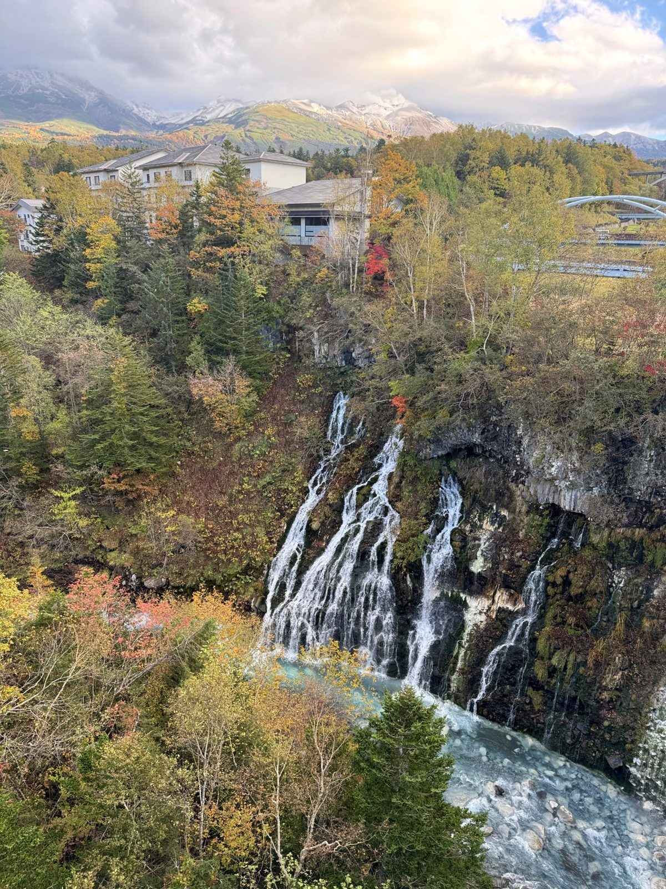
Shirahige Falls, with the turquoise river below and the first autumn colours in the trees
As the afternoon light began to soften, we drove up to a lookout in the hills above Biei to catch the sunset. Golden rays burst through the clouds over the fields, and we could see right across Biei town to the Tokachidake mountains. It was so peaceful, with just us, the quiet farm roads and that soft golden light.
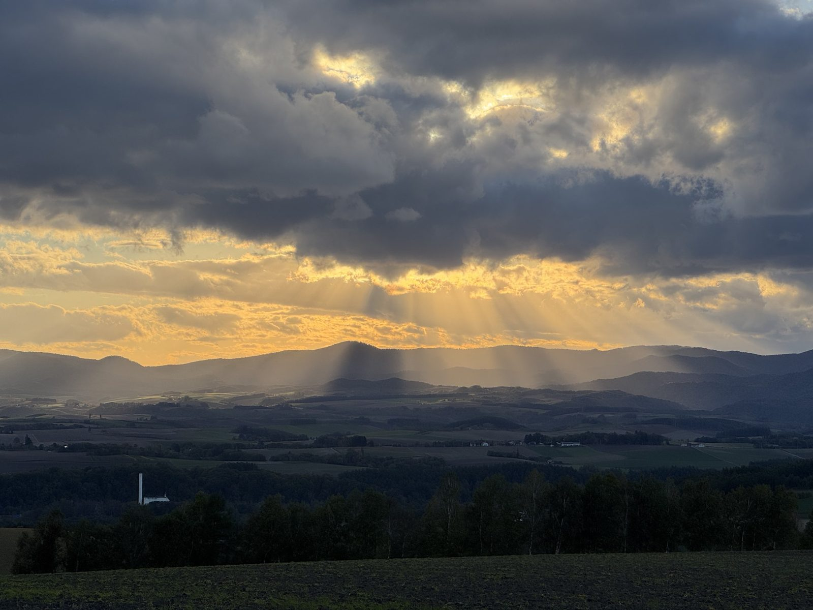
Sun rays breaking over the Biei hills
Dinner in a small country town
After the sunset, we went looking for dinner at a local izakaya, a Japanese pub serving drinks and small plates to share. It took us a few tries, as the first two places were full, but third time lucky, we found a tiny bar run by an elderly couple. They spoke very little English and seemed a little shy, but they were kind and made us feel welcome, and the cosy little room was lined with dark timber shelves full of records and trinkets. We settled in with some skewers, a cold Asahi for John and some warm sake to share, which was perfect on a chilly night.
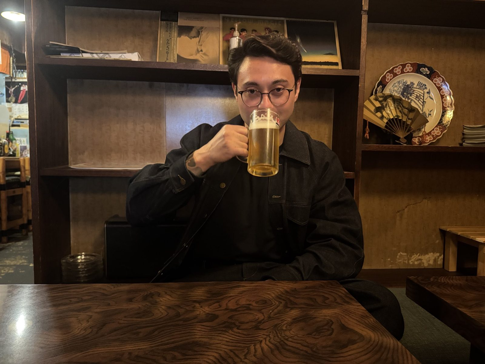
John and his cold Asahi at the izakaya
Good to know: In quieter country towns, restaurants often close early, and some small izakaya are run mainly for regulars or by booking. Check opening hours before you head out, look up a few well-reviewed places beforehand, and book ahead where you can (your accommodation may be able to help).
Useful phrases for eating out: A few simple Japanese phrases go a long way, especially in smaller towns where little English is spoken. These came in handy every single day:
Sumimasen (soo-mee-mah-sen): excuse me
Itadakimasu (ee-tah-dah-kee-mas): said before you eat, a bit like "let's eat"
Kanpai! (kahn-pie): cheers!
Oishii desu (oy-shee dess): it's delicious
Okaikei onegaishimasu (oh-kai-kay oh-neh-guy-shee-mas): the bill, please
Gochisousama deshita (go-chee-soh-sah-mah desh-ta): thank you for the meal, said as you leave
Arigatou gozaimasu (ah-ree-gah-toh go-zai-mas): thank you very much
Farm Tomita
On our last morning, we packed up the car and headed south under a clear blue sky, with the snow-capped Tokachidake mountains following us all the way to Farm Tomita in Nakafurano, Hokkaido's most famous flower farm. It's best known for its lavender, which peaks in July, and while we visited in autumn after the lavender had finished, the farm was still bursting with colour. Row after row of red, orange and yellow flowers stretched all the way to the mountains, and entry is free, too.
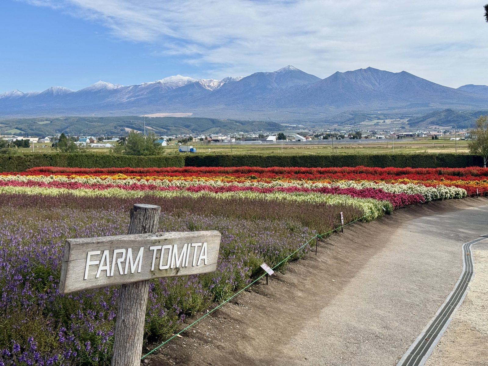
The Farm Tomita sign, with rows of flowers and the mountains behind
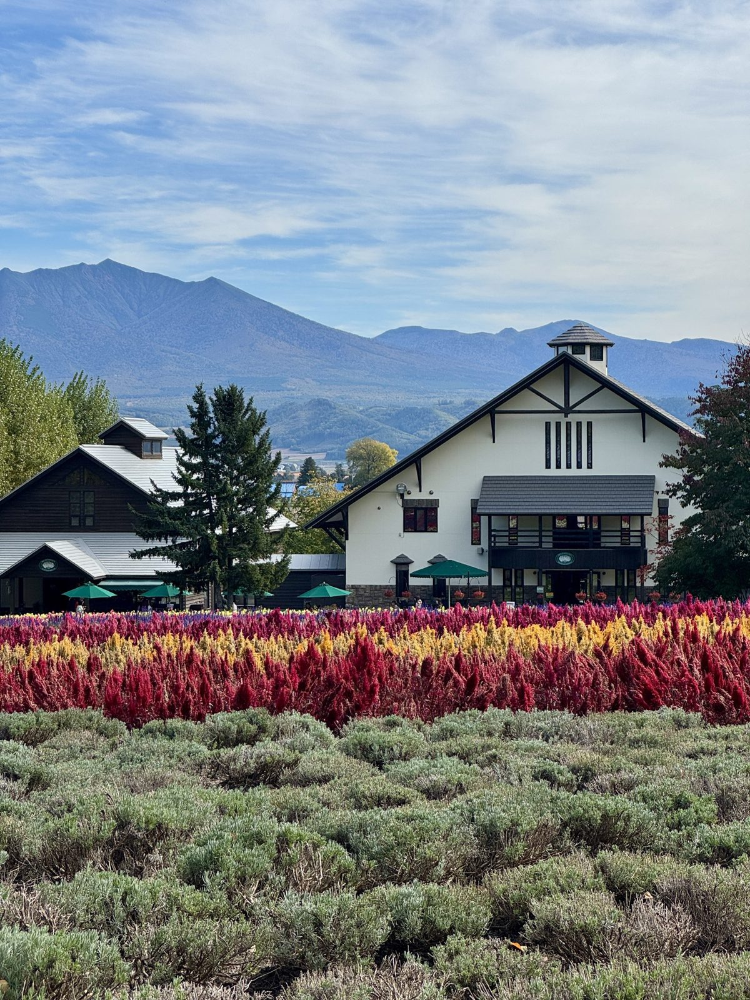
Flower beds with the mountains behind
Everything here is so kawaii (cute) and on theme, with lavender purple everywhere you look, from the tractor and scooters to the farm's mascot, Rabe-san, a little lavender fairy (who apparently often gets mistaken for an eggplant!). Food stands sell local treats like Furano melon, croquettes and lavender drinks, but the soft serve is a must. John had the melon and lavender swirl, and I had lavender, which was lightly floral and creamy, perfect for a sunny day among the flowers.
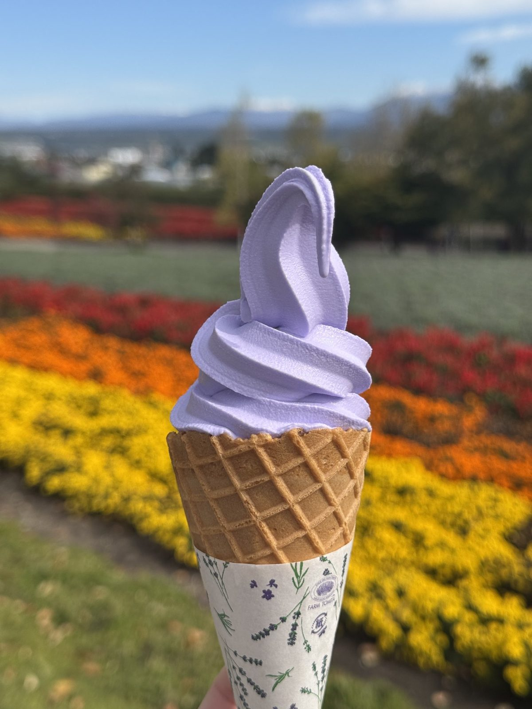
Lavender soft serve among the flower beds
The gift shops are full of lavender everything, from skincare and soaps to hand towels and postcards. I picked up postcards, lavender face masks as gifts, a mini hand towel for my collection and a big Farm Tomita magnet. I also couldn't resist a gachapon (capsule toy) machine full of tiny metallic lavender-themed magnets, and kept going until I think I had the whole set! They all live on our fridge at home now.
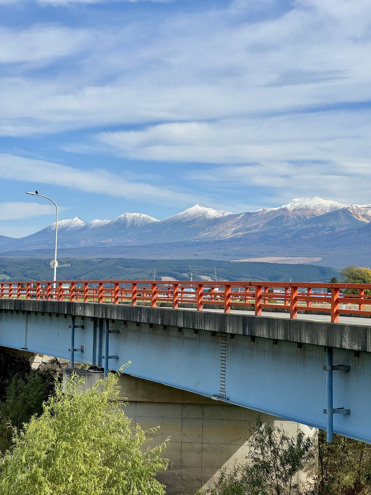
Snowy peaks and a red bridge as we left Farm Tomita
From Farm Tomita, we hit the road to Sapporo for the second half of our week, and the best food of our whole trip. You can read all about it in my Sapporo post.
My verdict
If you love nature, the outdoors and beautiful scenery, Hokkaido is the place for you. The countryside around Biei and Furano is a big part of why it's our favourite part of Japan. In just four days, we saw a snowy volcano, impossibly blue water, flower farms and endless golden fields, and exploring it all by car at our own pace was so much fun.
We'd love to go back, both in winter for the snow season and winter festivals, and in autumn, my favourite season, to see those hills in their full autumn colour.
Best for: nature, scenery and road trips.
Top tip: hire a car, and rug up for Mt Asahidake, even in autumn!